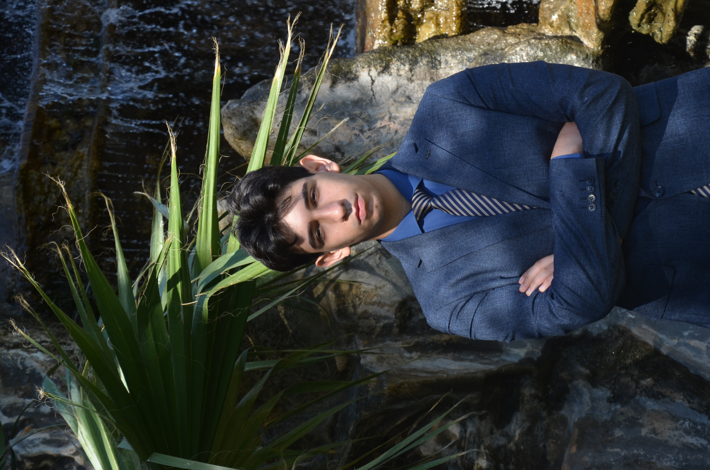

İZMİR YUNUS EMRE
ANATOLIAN HIGHSCHOOL
MUN CONFERENCE 2026
Conference starts in
A Letter From Our Secretary General

Cem Deniz
Secretary General
Welcome to YEALMUN 2026
It is a distinct honor to welcome delegates, faculty advisors, and distinguished guests to the second annual session of Yunus Emre Anadolu Lisesi Model United Nations Conference 26!
Scheduled to take place on October 16–18, 2026, YEALMUN'26 serves as a premier conference for rigorous academic discourse, international diplomacy, and strategic consensus building. Building upon the success of our inaugural conference, this year's session will convene over 400 participants from across the country to engage with some of the most critical challenges shaping our global landscape.
Across our 9 distinct committees spanning General Assembly organs, specialized agencies, and crisis simulations delegates will be challenged to navigate complex geopolitical dynamics, draft substantive resolutions, and employ high level negotiation techniques. Over the past seven months, our Secretariat, Academic Team, and Organization Team have meticulously structured every facet of this conference to ensure an intellectually demanding and rewarding experience for all attendees.
YEALMUN'26 reflects our commitment to fostering analytical rigor, public leadership, and cross cultural understanding throughout İzmir and beyond. We invite you to explore this website for detailed information regarding committee agendas, registration guidelines, logistics, and event schedules.
For further inquiries or administrative assistance, please contact the Secretariat through our official communication platforms.
Secretary General, YEALMUN 2026
A Letter From Our Director General

Defne Eylül Mısırlı
Director General
Dear Delegates, Organisation Members, Academic Team, and everyone who has contributed to YEALMUN'26,
Welcome to the second official session of the Yunus Emre Anadolu Lisesi Model United Nations Conference. My name is Defne Eylül Mısırlı, and it is an honor to serve as the Director General of YEALMUN'26. It is difficult to describe how proud I am to finally welcome you to a conference that our entire team has been working on for months, perhaps even for over a year.
Ever since I started attending MUN conferences, YEALMUN has been one of my biggest dreams. I honestly cannot begin to describe how much I wanted this conference to become a reality. As an Executive Team, we went through countless challenges, and there were times when we truly believed we would not be able to make it. Yet here we are. Seeing YEALMUN'26 come to life is something I will always be grateful for. Every member of our Executive Team has dedicated an incredible amount of time, effort, and passion to make this conference possible, and I could not be prouder of what we have achieved together.
When I attended my first MUN conference, I never imagined that one day I would have the opportunity to lead one. Like many delegates, I joined simply because I wanted to challenge myself and try something new. Over time, MUN became much more than a hobby. It became a place where I learned to communicate and collaborate with others. Also, I met so many people who supported me and continue to support me to this day, and I believe they always will.
That is exactly what I hope YEALMUN'26 will be for you. Whether this is your first conference or your fifteenth, I encourage you to make the most of every committee session, every debate, and every conversation. The resolutions you write are important, but so are the friendships you build and the experiences you take home.
None of this would have been possible without our Academic Team, Executive Team, Administrative Staff, Press Team, IT Team, Logistics Team, our dear Advisor, our Chairs, and every individual who has supported YEALMUN'26 throughout this journey. Their dedication is the reason we are able to welcome all of you today. I am grateful to every one of them for helping my greatest dream come true.
Finally, to our delegates: this conference belongs to you. Come prepared, participate actively, respect different perspectives, and never hesitate to speak up. We hope that when YEALMUN'26 comes to an end, you will leave with unforgettable memories, valuable experiences, and friendships that will last long after the conference is over.
Thank you for choosing to be a part of YEALMUN'26. I look forward to meeting each and every one of you.
Defne Eylül Mısırlı
Director General, YEALMUN'26